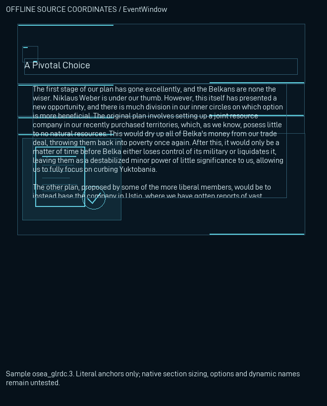
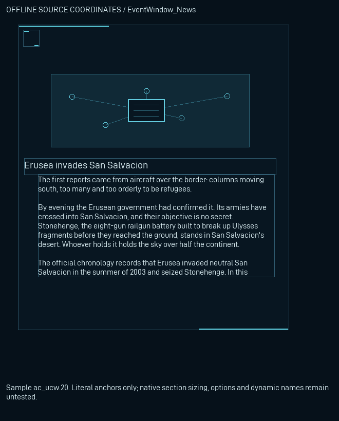
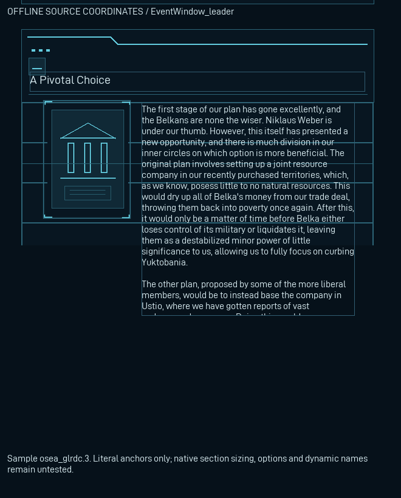
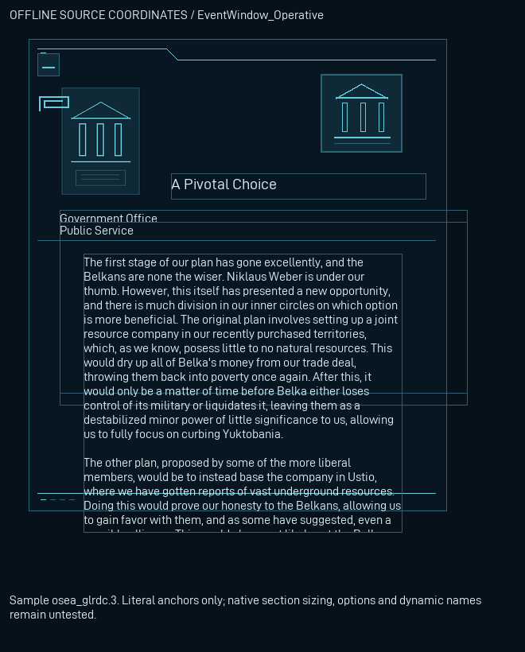
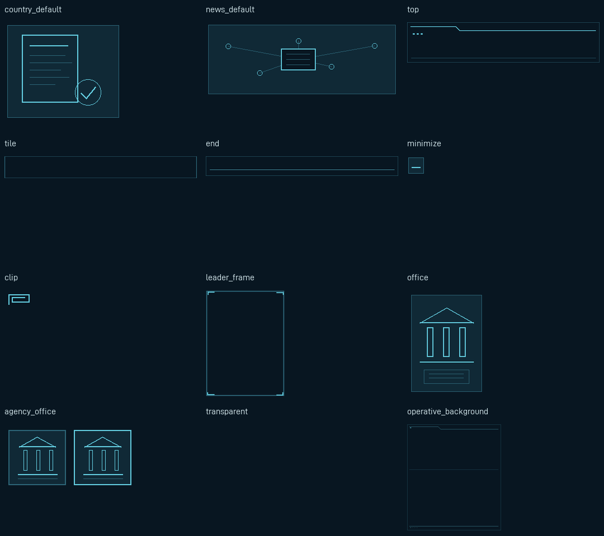
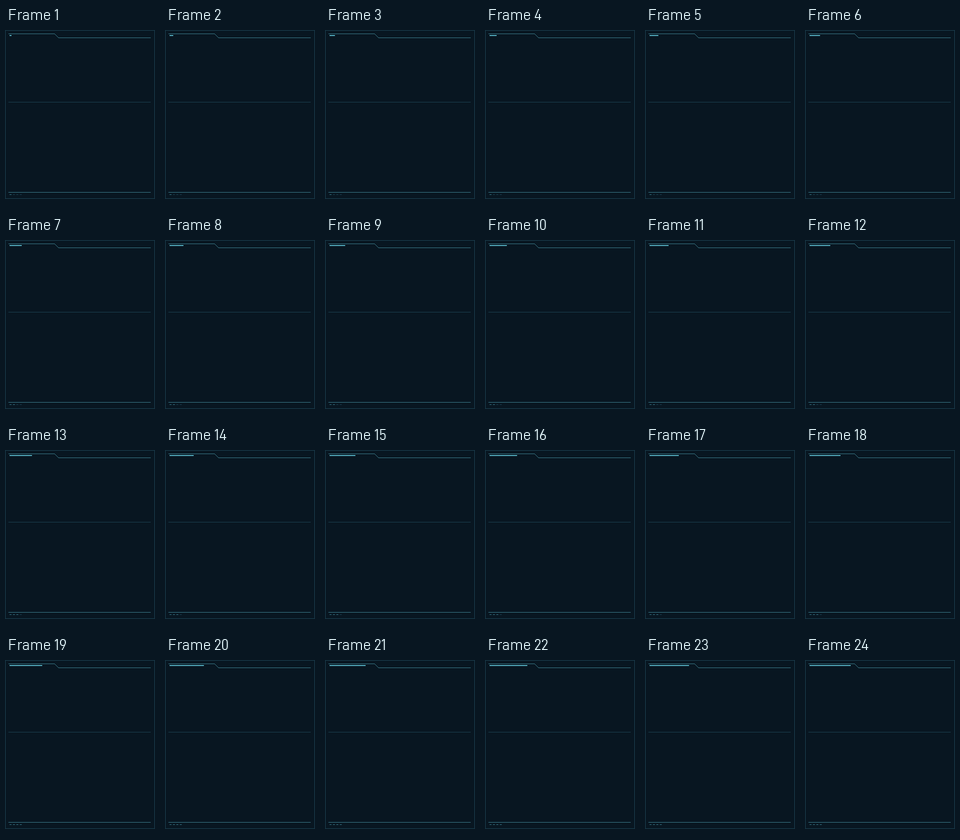

Actual delivered textures, literal source controls, selected frames and shipped bitmap glyphs. This is a reconstruction, not a native screenshot. Native dynamic section sizing, rotation, scrolling, option reflow, animation and agency slicing remain unaccepted.
The original GUI capture and fit apertures are unchanged. Leader/operative drawings use actual English country text as a labelled stress proxy: this source contains no authored events of those types. Long descriptions are clipped only to their existing source apertures; the country/news scroll controls remain present.
Actual static title clips: 0. Unscrollable actual static body clips: 0. See full metrics, dynamic limitations and restoration proof.





